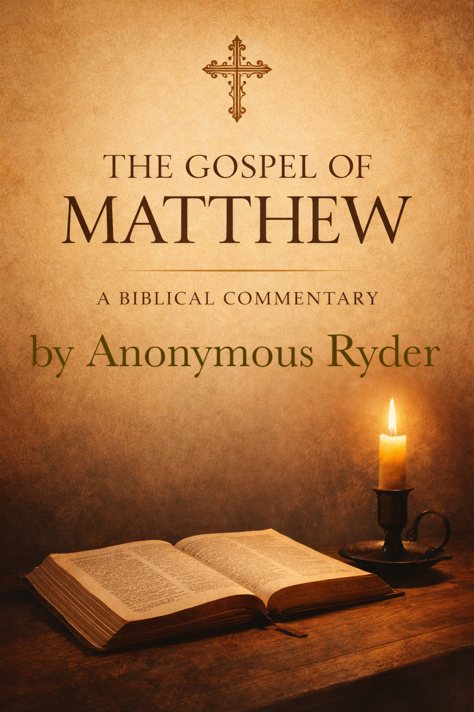

About The Author
Anonymous Ryder is a Christian author writing fiction and Biblical commentary at the intersection of faith, moral responsibility, and human endurance.
He brings to his work a background as an attorney in international human rights law and prior service as a U.S. Army soldier overseas. These experiences inform his focus on faith, authority, sacrifice, justice, and the internal cost of survival under pressure.
Fiction Works
He is currently in the final editing stages for his debut fiction novel, Seven's Song.
About the novel:
More than twenty years after an asteroid struck Earth. America is broken, split into city-states, ruled by corruption, and scarred by the ash-covered winters that never ended.
In this fractured world, a young woman named Seven escapes captivity only to find herself in a community hidden in the foothills of the Appalachian Mountains, clinging to order, while hiding a secret.
When a mysterious man enters town carrying secrets he is willing to die for, she must decide whether to help him. Even if the Prophet forbids it.
A story of justice and forgiveness, faith and fire, Seven's Song is a haunting vision of America's future and one woman's's choice to open her hand when the world tells her to close it.
Non-Fiction Works

This year, Anonymous is also beginning a non-fiction Biblical commentary on the Gospel of Matthew, aimed at careful readers seeking historical grounding, theological clarity, and faithful application of the nearly 2,000 year old eyewitness account to the life of Jesus Christ.
Both works are anticipated for completion by the end of 2026.
Contact
Email: anonymous_ryder@proton.me
Twitter: @anonym_ryder